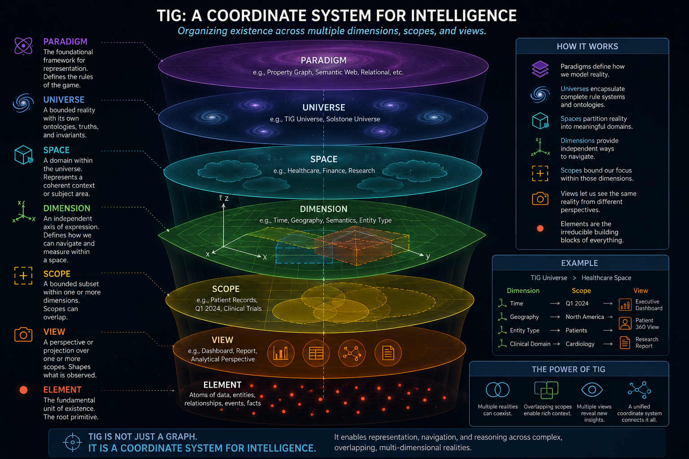

We're defining the Collaboration Paradigm — graphs as engines for human–AI collaboration — and building its first realization, The Intelligent Graph. Today, we put your relationship layer to work through hands-on consulting.
The Paradigm
Today, the relationship with AI is transactional — prompt in, answer out, the model as oracle. The shift that matters is collaborative: intelligence, of more than one kind, participating in a shared space that accrues. And collaboration is, at bottom, about relationships — which is why the substrate must treat them as the first citizen, not merely first-class, and why the graph must do more than describe; it must run.
prompt → answer · the model as oracle · stateless · you query a tool
participate in a shared space · it accrues · relationships the first citizen · the graph runs

What we do
A fixed-scope engagement that turns one real dataset — conversations, support, a knowledge base — into a connected graph that earns its keep, with a path to a production system of record.
The Paradigm's first realization: a non-destructive overlay that recovers the concept and relationship layer extraction pipelines throw away, makes it traversable, and lets the graph act.
theintelligentgraph.com →A connected graph that complements your CRM rather than replacing it — capturing how people and topics actually relate across calls, chats, and support.
Who it's for
Teams in enterprise healthcare and B2B customer management who want their own graph — not a hyperscale platform. We pair with Solstone for capture-to-graph in a single, self-contained stack.
Why us
From rule-based expert systems and the early Semantic Web to multi-billion-node production graphs — and a single conviction that relationships come first. Founded by Michael Bauer. → michaelbauer.com
Work with us
We'll scope one dataset, ship a working graph, and show you what your relationship layer is worth.